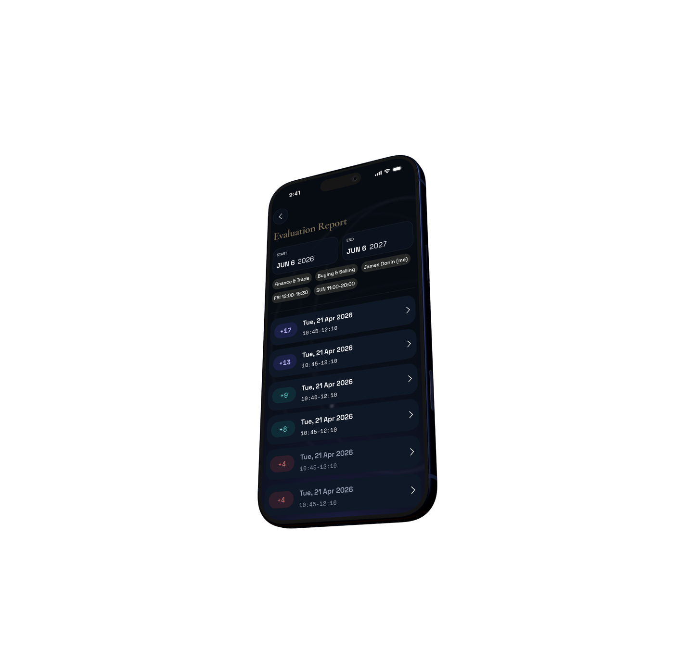

P0 · Foundation
Not a visitor-facing page — a test surface for the design foundation: Orrery color tokens, the three type roles, base buttons, inline icons, and the image pipeline output. Reachable by URL only.
bg
#070C13
bg-2
#0A1019
bg-3
#0C1320
surface
#0F1826
surface-2
#172238
surface-3
#1F2D49
fg
#EEF1F8
muted
#8B95A9
teal
#0FB8AC
teal-hover
#14C4B8
teal-soft
#6EEAE3
purple
#5B4FD4
purple-soft
#9B8FEA
bronze
#7A6C53
bronze-hover
#8F826D
bronze-soft
#70624C @ 16%
bronze-soft-fg-dark
#C8B493
bronze-soft-fg-light
#52483B
hair
fg @ 10%
hair-strong
fg @ 18%
The fixed dark-canvas glow (purple top-right, teal top-left) is applied to
<body> and is visible behind this whole page —
strongest near the top edge. It is background-attachment: fixed,
so it stays put as you scroll.
Display — Cormorant Garamond
The sky, on your terms
The sky, on your terms
The sky, on your terms
The sky, on your terms
Body — Space Grotesk
Kairos reads the sky for the right moment. Body copy sits in Space Grotesk at a comfortable measure — this is the workhorse voice for paragraphs, descriptions, and interface text throughout the site.
Muted body: secondary information, captions, and supporting lines that should recede a step from the primary copy.
Medium weight · Regular weight · Semibold weight
Data — Space Mono
Eyebrow label · electional astrology
14:32 · 40°10′N 44°30′E · waxing gibbous
score 87 / 100 — favorable window
Hover the primary and ghost buttons to verify state transitions.

Modern browsers load the AVIF; the PNG is the last-resort fallback. Generated
locally by npm run images, committed to
site/img/.